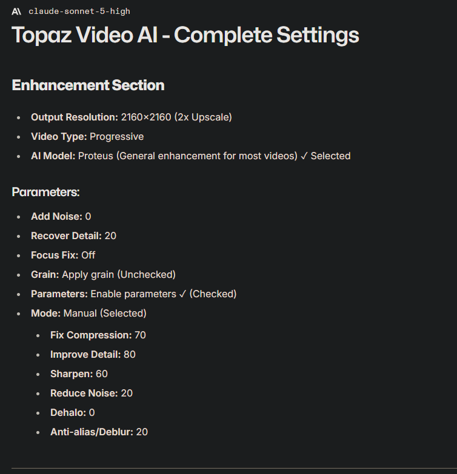
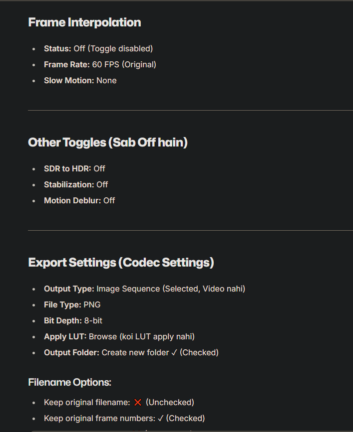
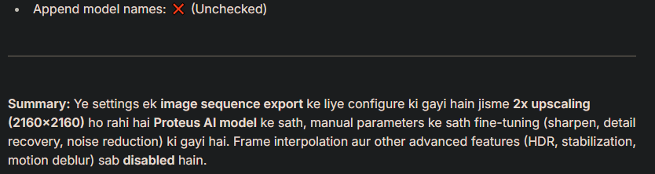
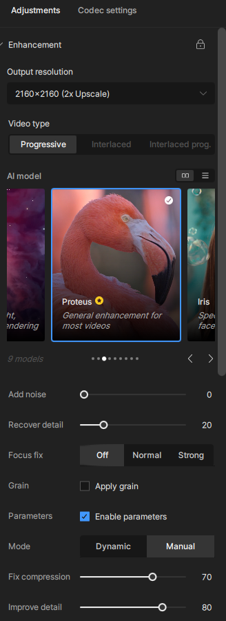
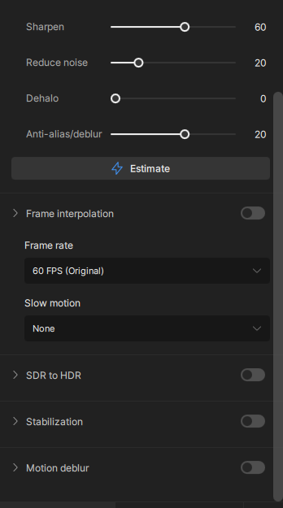
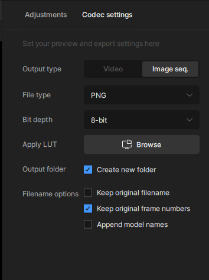

The complete Topaz Video AI setup reference — every value from the settings screenshots typed out for you: Proteus enhancement, manual parameters, and the full export (codec) configuration for clean 2x 4K upscale renders.
Topic: Video Enhancement / Upscaling · Tool: Topaz Video AI · Type: Settings guide · Price: Free
100% Free. Every value below is copied directly from the Topaz Video AI settings screenshots — no guesswork. Set each option to match and you'll get the same clean 4K upscale result.
What is this guide? A complete, screenshot-backed Topaz Video AI configuration for 4K edits. It uses the Proteus AI model for a clean 2x upscale to 2160×2160, fine-tuned with manual parameters (fix compression, improve detail, sharpen, reduce noise, dehalo and anti-alias/deblur), and finishes with an image sequence export at the highest quality.
Who is it for? Anyone editing and upscaling footage to 4K with Topaz Video AI — editors who want sharp, detailed output without halos, over-sharpening or compression artefacts. No model tuning experience needed — you just type in the values below.
What you need: Topaz Video AI installed, your source clip, and about two minutes to enter the settings.
All the settings screenshots from the release, in order. Match every value to the tables below.

Enhancement section — output resolution, video type, AI model and all Proteus manual parameters.

Frame interpolation, other toggles (all off) and the full export / codec settings with filename options.

Append model names option plus the full settings recap in one summary.

The Adjustment tab — Proteus selected, 2160×2160 (2x), Progressive, Focus fix Off, Enable parameters checked, Manual mode with fix compression and improve detail sliders.

Sharpen / reduce noise / dehalo / anti-alias sliders, Estimate button, frame interpolation off and the SDR-to-HDR, stabilization, motion deblur toggles all off.

The Codec settings tab — Image seq. output type, PNG, 8-bit, no LUT, create new folder and all three filename options.
These are the values shown in the screenshots above. Copy them exactly to get the same 4K edit result.
| Setting | Value |
|---|---|
| Output resolution | 2160×2160 (2x Upscale) |
| Video type | Progressive |
| AI model | Proteus — General enhancement for most videos ✓ Selected |
| Setting | Value |
|---|---|
| Add noise | 0 |
| Recover detail | 20 |
| Focus fix | Off |
| Grain — Apply grain | Unchecked |
| Parameters — Enable parameters | ✓ Checked |
| Mode | Manual (Selected) |
| Slider | Value |
|---|---|
| Fix compression | 70 |
| Improve detail | 80 |
| Sharpen | 60 |
| Reduce noise | 20 |
| Dehalo | 0 |
| Anti-alias/deblur | 20 |
| Setting | Value |
|---|---|
| Status | Off (Toggle disabled) |
| Frame rate | 60 FPS (Original) |
| Slow motion | None |
| Feature | State |
|---|---|
| SDR to HDR | Off |
| Stabilization | Off |
| Motion deblur | Off |
| Setting | Value |
|---|---|
| Output type | Image Sequence — selected, not Video |
| File type | PNG |
| Bit depth | 8-bit |
| Apply LUT | Browse (no LUT applied) |
| Output folder — Create new folder | ✓ Checked |
| Option | State |
|---|---|
| Keep original filename | ✗ Unchecked |
| Keep original frame numbers | ✓ Checked |
| Append model names | ✗ Unchecked |
Quick recap: These settings are configured for an image sequence export with 2x upscaling (2160×2160) through the Proteus AI model, with manual parameter fine-tuning (sharpen, detail recovery, noise reduction). Frame interpolation and the other advanced features — HDR, stabilization, motion deblur — are all disabled.